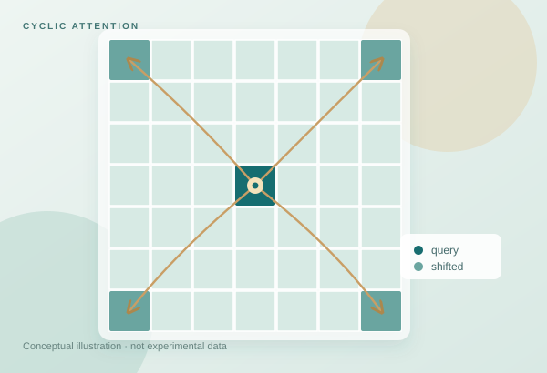

Attention over Shifts for Low-Data Vision
We explore multi-head cyclic attention (MHCA), where feature interactions are aggregated over spatial shifts instead of dense token-to-token attention. The approach targets data-efficient visual learning across classification and other vision tasks.
Manuscript · 2026Research context